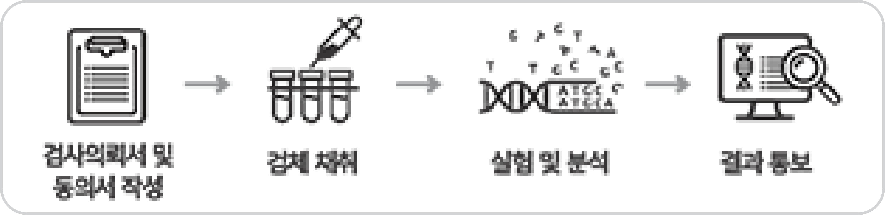

본 설명문은 ㈜테라젠바이오에서 제공하는 ‘소비 자 대상 직접 유전자 검사 서비스(이하 DTC 유전자 검사)’ 이용 전, 소비자가 해당 서비스의 임상적 유 용성, 유전자 검사의 한계 등에 대해 충분한 이해를 가지고 자발적 동의 후 검사를 할 수 있도록 돕기 위 해 제공되고 있습니다.
1. 유전자 검사 목적
본 설명문은 ㈜테라젠바이오에서 제공하는 ‘소비자 대상 직접 유전자 검사 서비스(이하 DTC 유전자 검사)’ 이용 전, 소비자가 해당 서비스의 임상적 유용성, 유전자 검사의 한계 등에 대해 충분한 이해를 가지고 자발적 동의 후 검사를 할 수 있도록 돕기 위해 제공되고 있습니다.
5. 검사 이용 방법
DTC 유전자 검사는 본 서비스에 대해 충분히 이해 하고, 유전자 검사 동의서, 개인정보 수집 및 이용 동의서를 작성하신 후에 이용하실 수 있습니다. 본 서비스는 인터넷 등을 통한 온라인 주문 및 협력 업체 혹은 판매점 등을 통한 오프라인 구매가 가능 합니다. 본 서비스는 다음 그림과 같은 과정으로 진 행됩니다.
동의서 작성 후 제공된 키트를 이용한 검체 채취, DNA 해독 및 분석, 결과 제공 등이 서비스 범위에 해당됩니다.
10. 과학적 근거 및 상품 정보 확인
정보 확인 웹사이트 주소 URL https://www.theragenbio.com/ko/dtc- service-guide